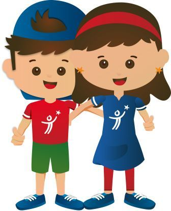

A continuación recibirá un espacio de capacitación fundamental para usted como colaborador del Instituto Roosevelt, sobre el uso de equipos biomédicos, que tiene un gran
impacto para mejorar procesos sobre atencion de servicios de salud y seguridad al paciente, ayudando a la disminucion de posibles riesgos; aumentando el conocimiento de todos nuestros colaboradores
Por lo tanto tenga en cuenta las siguientes recomendaciones para ser efectiva la capacitacion:
1. Disponga de por lo menos 25 minutos para la realización de toda la capacitacion.
2. Siempre asegúrese de responder absolutamente todas preguntas que se soliciten.
3. Siempre que vaya a dar siguiente página asegúrese de enviar el cuestionario por el contrario no serán
tomadas en cuenta las respuestas y será necesario realizar de nuevo la capacitacion.
4.ponga mucha atención al vídeo presentado ya que de este se generarán todas las preguntas a resolver.
5. Tenga en cuenta que solo podrá presentar una vez la capacitacion, en dado caso que por fuerza mayor sea
necesario otro intento es necesario acercarse a bioingeniería para habilitar nuevamente el cuestionario.
6. Si aprueba con un 100% el cuestionario sera dado un certificado personal de uso del equipo.
7. Recuerde que estos cursos son indispensables para el desarrollo como colaboradores en el instuto, por eso es indispensable su aporte como colaborador.
Muchas gracias por tu colaboración recuerda que esto es con el fin de mejorar como instituto, en nuestro
procesos de calidad.
Muchas gracias por la colabracion
Video
Encuesta
Finalizar